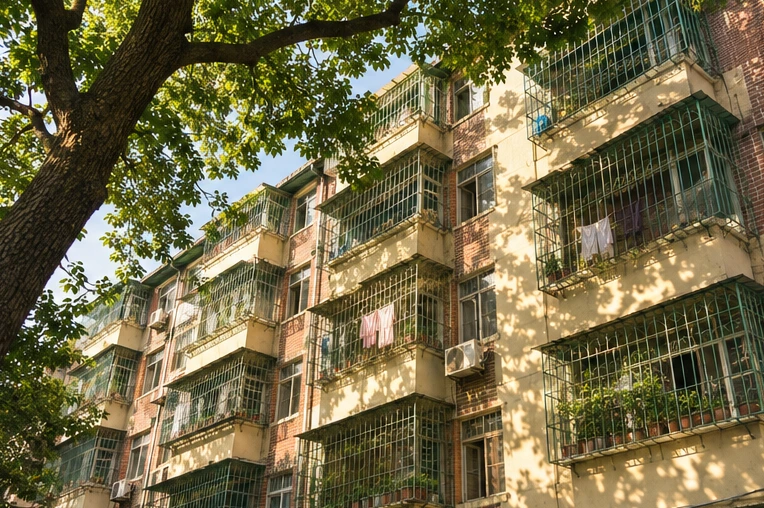

栖里智慧社区 / 住户服务
让回家，
安心一点。
从单元门到家门口，看清每一位来访的人。
松柏里三栋可视门禁现已接入。

RESIDENT SERVICES
住户服务
单元门来电
一楼门厅
松柏里 · 3 栋 1 单元住户 604
CAM 01 · ENTRANCE23:48:06
有线传输▂▃▆▂▅▇▂▃
QILI INTERCOM / 内线 0604向下滚动或操作面板
从单元门到家门口，看清每一位来访的人。
松柏里三栋可视门禁现已接入。
